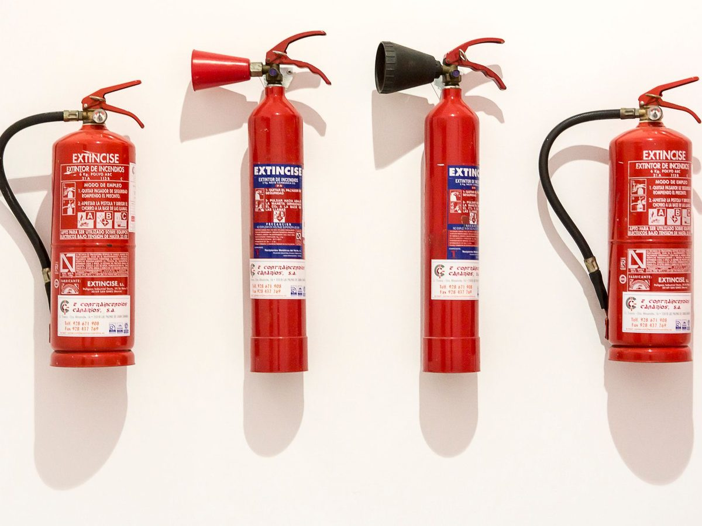

Sourcing & procurement
Product sourcing and procurement support for specialized safety requirements.
We help businesses bring together fire safety, security and industrial protection with sourcing, installation and maintenance support.
 01 / 04
01 / 04 Daroob describes delivering conventional and addressable fire alarm systems, with wired and wireless flame, smoke and heat detection. The portfolio also includes suppression systems for kitchens, warehouses and industrial applications.
Discuss a fire system ↗
02 / 04The company offers supply and installation, system activation and periodic maintenance. Its service information also describes mobile fire extinguisher servicing at the customer’s site.
Security capabilities include CCTV systems, X-ray screening equipment, metal detectors, fingerprint access and RF card or password-based entry control.
Explore security systems ↗ 04 / 04
04 / 04 The company supplies protective equipment and site safety products, with options for the varied tasks and environments found in construction, facilities and industry.
See workplace safety products ↗Product sourcing and procurement support for specialized safety requirements.
The company profile describes distribution and agency work with suppliers and manufacturers in several regions.
The company website describes technical after-sales support for the X-ray and metal detection equipment it supplies.